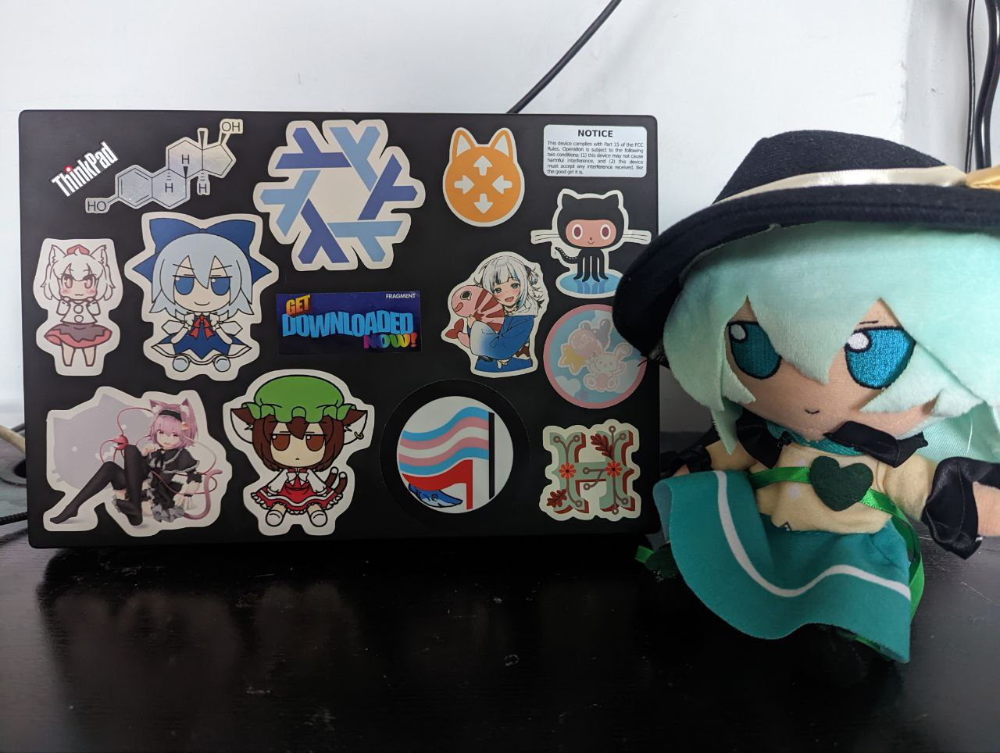

Hello, I'm Kat!
I currently live in Greater London, UK although I'd like to end up living in Greater Vancouver, Canada by the end of 2022.
I can be contacted in the email provided in the header and via Matrix at @kat:kittywit.ch.
My PGP key ID (in 0xLONG format) is rsa4096/0xE8DDE3ED1C90F3A0.
Personal Life
I like anime and manga, I try to track what I watch/read. It's usually slice of life or yuri.
I'm a rhythm game nerd; my favourite rhythm games so far are SDVX, DJMAX Respect V and Beat Saber.
I also like VR; I own a Meta Rift CV1, three sensors and a Kinect for the 360 (relevant because of K2VR) which I like to play games on (such as Beat Saber, Pistol Whip and Jet Island, all of which I recommend!).
I like other video games, earlier in my life I was a big fan of FPSes; these days, I'm more of a rhythm games (hence two sentences ago), JRPGs and RTSes kind of gal. On the console side of things, I own a PS4, PS3 and Switch. I do not play them anywhere near enough.
I also like mechanical keyboards (my daily driver mechanical has Kailh Speed Coppers!) and soldering and I want to get into hobbyist electronics.
Technology Hobbyist
I am a massive fan of NixOS, infrastructure as code (specifically Terraform) and functional programming. I'd like to eventually write some things in Haskell or Elixir and write some more things in Rust and Go.
My personal infrastructure is all machines running NixOS (minus the gaming desktop, which is Windows 11 and the work laptop, which is macOS), provisioned and deployed with Terraform (using arcnmx/tf-nix instead of writing things in HCL or with cdktf).
I daily drive a ThinkPad x270 called "koishi", running a dualboot of NixOS with GNOME 3 and Windows 11, which is my personal laptop; used for builds and deploys.
These days I'm trying to keep all of my code on my github. I've written a number of things in Rust, Python, Nix and Go and have also contributed to a number of open source projects.
I also like tinkering with smart home technology/home automation and I have a bunch of stuff hooked up to Home Assistant where I live.
Professional Life
I am currently working as a Junior DevOps Engineer for Glamorous AI.
My CV can be found here.